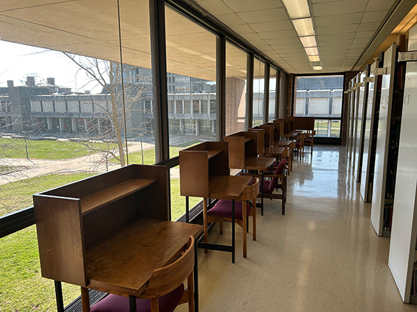
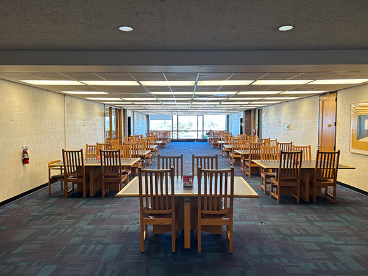
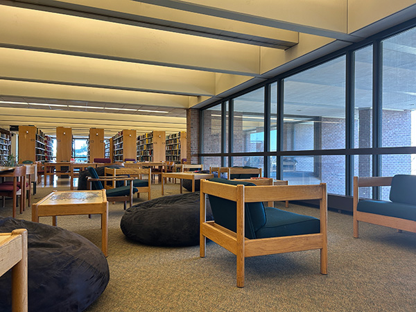
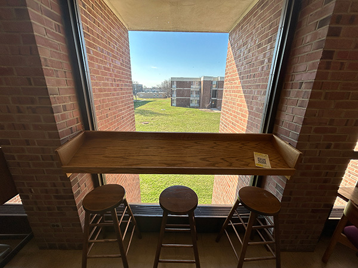
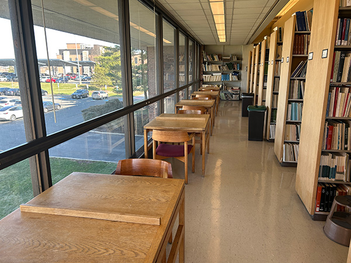
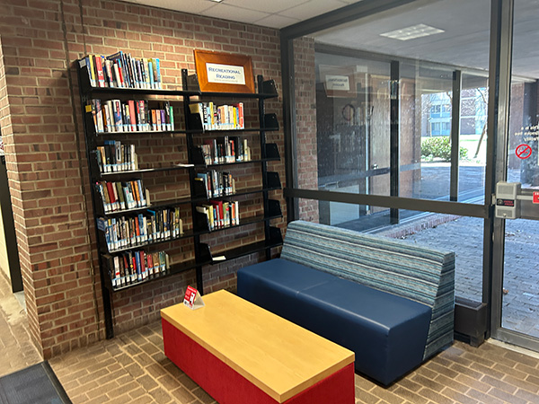
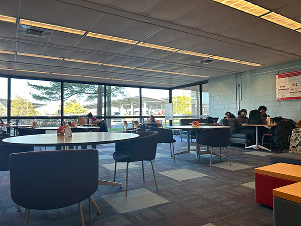
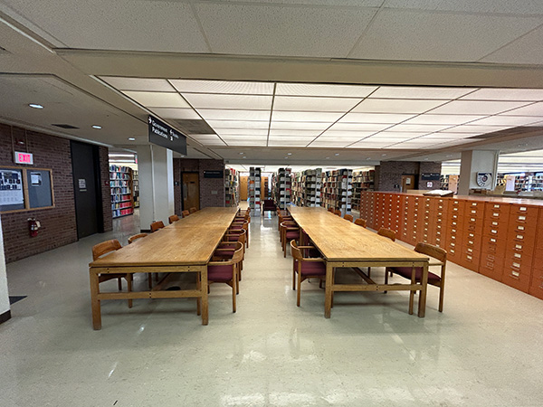
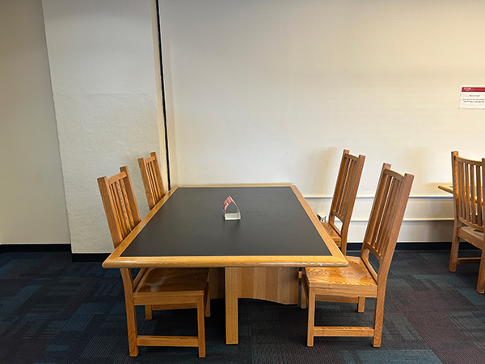
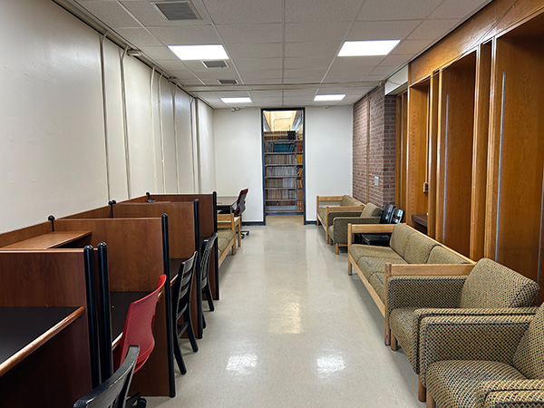

The Ecological Niches of the Library of Science and Medicine
In an effort to better understand the environment of the LSM, I have observed the differing ecological niches present within. I divided the available study spots into 3 main categories, based on the type of study they facilitated: solitary study, group study, or a mix of both in the same area. I further divded these categoes based on whether they were lit by natural or artifical light. I found that collaborative spaces predominate in the library, especially in areas with natural lighting. I also discovered that the solitary study spaces were almost exclusively lit by artifically.
Solitary spots with natural lighting

Solitary spots with artifical lighting


Collaborative spots with natural lighting






Collaborative spots with artifical lighting




Blended spaces with natural lighting

Blended spaces with artifical lighting
